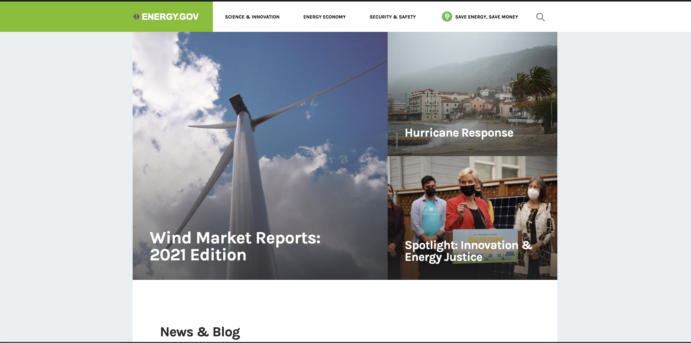
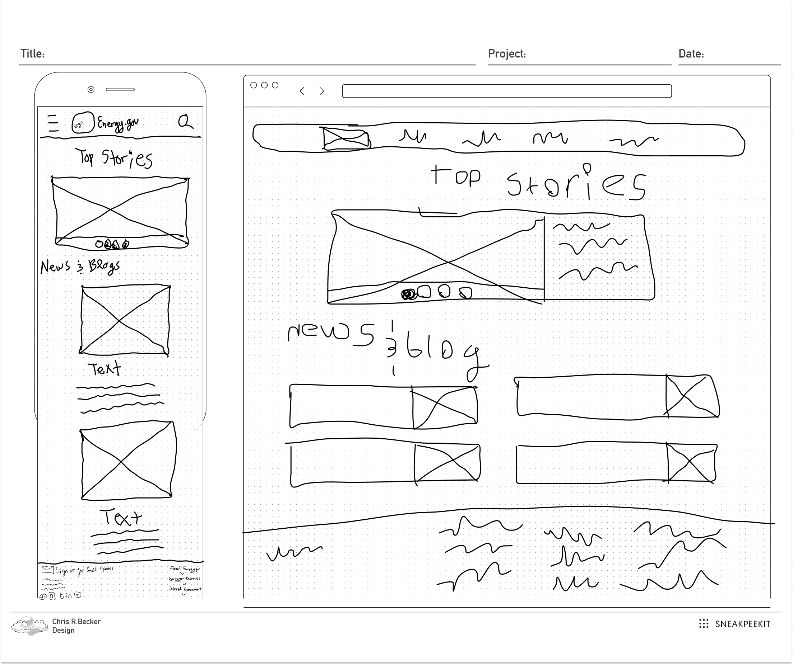

When navigating through the Department of Energy’s website it is apparent hat the webiste is outdated and not as effcient as it needs to be.
The Solution:
Redesign the Energy.gov website by making it more effcient to navigate through and update the overall style of the website.
The Impact:
Users were able to navigate through the site quicker and with more ease.
The Process:
User Interface Analysis, Information Architecture, Responsive Design, Interaction Design
User Interface Analysis
For this project we were tasked with Redesigning a governmnet website. We first had to understand our user and why they would come to this website.

User Persona: Meet Douglas Pine.
Douglas Pine is a enviromental lawyer and visits the Department of Energy website often for research.
Pain Points:
Douglas finds the website outdated and hard to read.
He is often unable to find information quickly.
With our user persona in mind we created the user flow. Our user visits Energy.gov to stay up to date on energy initatives and gain information for future cases.
User Flow:
Heuristic Evaluation:
As a team we conducted a Heuristic evaluation on the current webisite, focusing mainly on the navigation.
User Interviews:
The next step was to conduct user testing and understand the pain points on the current website.
User Interview 1:
“This website makes me feel like I’m simply accessing a website that was only designed to be used on a desktop.”.
User Interview 2:
“A lot of the text is too long. I would probably skip over it. I would want either bullet points or something to catch my attention right away.”
User Interface Analysis
From here we took our user insights and card completed a card sort and created a new site map.
Card Sorting:
Site Map:
Responsive Design
Using our new site map we created mockups of the new website starting with free hand and then into midfi.

From here we switched gears into UI where we conducted color anaysis and found that some of the current websites colors were not ADA complient. From here we created our moodboard and chose our new color pallete.
Interaction Design
After creating our Hifi Mockup we tested again with users and here is what we found:
User Interview 1:
"I'm trying to think if I like the navigation bar kind of being constant in everything. It's going behind it. It almost looks like it shouldn't the way it has like that gray up top as well."
User Interview 2:
“I like that the navigation bar is green, too. It makes more sense when you click the drop down.”
Final Product and Conclusion
Conclusion:
This project we focused heavily on the UI portion as well as the sites navigation. It was eye opening to see even government websites are difficult for users to navigate.
Next Steps:
If I were to take this project futher the next step would be to contact a stakeholder at the Department of Energy and understand the site from their point of view.


.jpg)


.jpg)